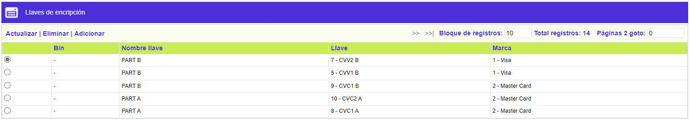
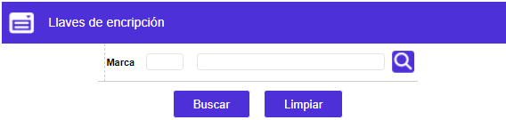
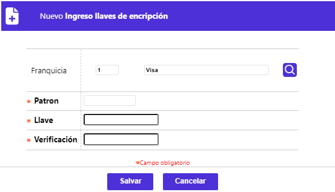
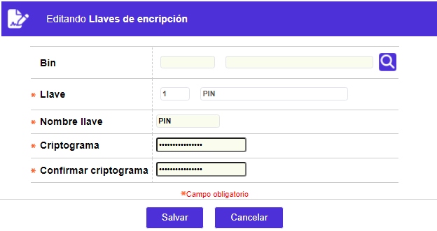

Registro llaves encripción
Esta función registra en el sistema las llaves de PIN, CVV, CVV2, PVV y TRXFER. Estas llaves son compiladas y almacenadas en una librería especial, las cuales son tomadas por las rutinas que calculan PIN, CVV, CVV2, y PVV, utilizadas durante los procesos de emisión de nuevas tarjetas y sobreflex.
El formulario contiene las opciones Actualizar, Eliminar, Adicionar y Detalle. Adicionalmente, cuenta con un filtro de búsqueda.

Filtro: Se pueden realizar consultas a través de las siguientes opciones:

|
Marca |
Este campo obligatorio, cuenta con lista de valores poblada previamente en la opción franquicias, de la cual se selecciona la marca del producto sobre el cual operarán los parámetros. |
Adicionar: Si el usuario invoca la opción Adicionar se despliega un formulario con los siguientes campos:

|
Bin |
Campo con lista de valores en el cual se indica el Bin al que corresponde la llave que se ingresará. |
|
Llave |
En este campo con lista de valores se indica el tipo de llave que se ingresará. |
|
Nombre llave |
En este campo indica el nombre del tipo de llave que se ingresará otorgado por el banco. |
|
Criptograma |
Campo alfanumérico de 16 posiciones, no obligatorio, en el que se digita la llave secreta otorgada por la central autorizadora para la emisión de nueva tarjetas. Dada la calidad de la información, se adecuó la captura para que no sea visible en pantalla el número de llave ingresada. |
|
Confirmar criptograma |
Una vez definida la llave, en esta campo se debe ingresar nuevamente la misma información para efectos de validación con el campo inmediatamente anterior. Si se encuentra algún tipo de diferencia, se reinicia la captura. |
Actualizar: Si el usuario invoca la opción Actualizar se despliega un nuevo formulario en el cual los únicos campos modificables son: Bin, Criptograma , y Confirmar criptograma.
